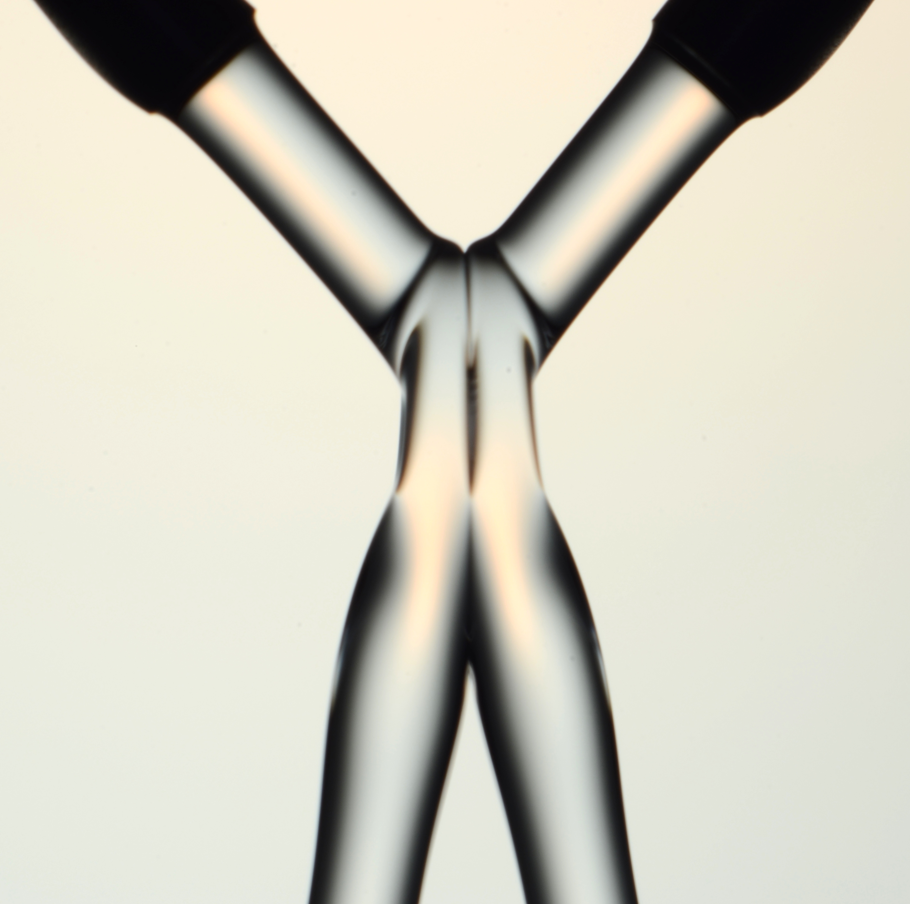
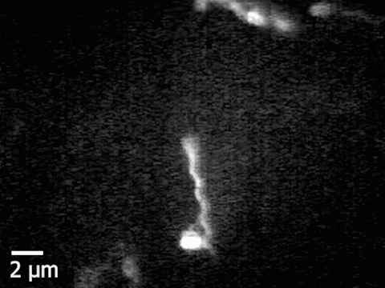
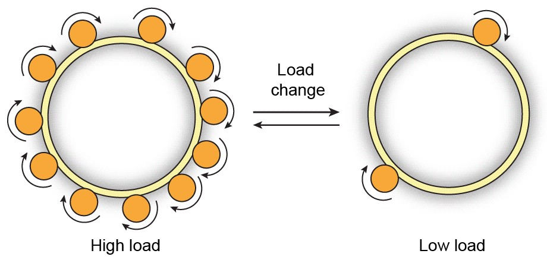
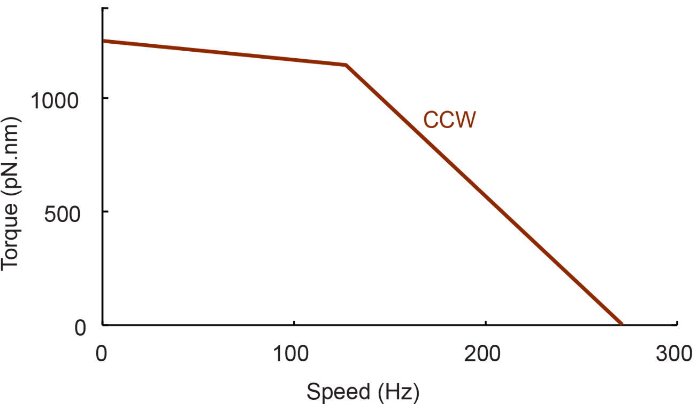
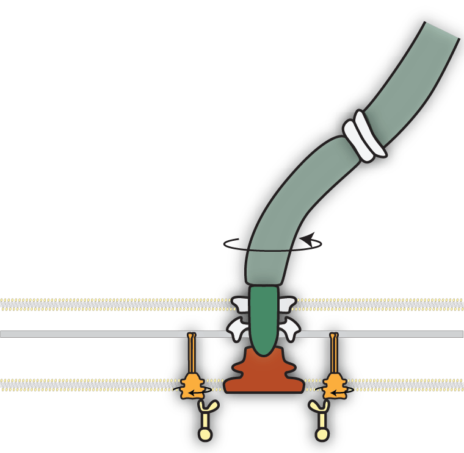

Mechanical forces shape living organisms

My academic journey: from engineering to biophsyics
New Delhi (Undergrad)
Bangalore (Research Fellowship) 
Virginia (Master's) 
Ph.D. research: Flow-mediated interactions between marine plankton
EAT
EATEN

Ph.D. research: Plankton use a variety of swimming strategies

Breast stroke

Hovering

Cruising

Jumping
Ph.D. research: combining experiments and theory to elucidate plankton flows
Measurements
Modeling
Going from 'outside' of the organism to the 'inside'
How do organisms sense, process, and respond to mechanical stimuli?
The bacterium E. coli as a model organism
Inhabits guts of mammals
Some strains are harmful, most harmless
Multiple flagella per cell
Bacteria are the smallest self-propelled swimmers

Many bacteria swim by rotating helical flagella
 Slowed down 20 times

A nanoscale motor powers
swimming in bacteria
How does the flagellar motor respond to mechanical stimuli?
Automatic gearshift in cars allows the engine to adapt to changing terrains


Automatic gearshift in E. coli allows the motor to adapt to changing loads


What is the physical and molecular mechanism underlying this automatic gearshift?
How can we change motor load?


Instantaneously
Reversibly
Controllably
Electrorotation allows
full control over motor load


Instantaneous
Reversible
Controllable
Electrorotation allows
full control over motor load


A change in load triggers stepwise changes in motor speed


The motor adapts to changes
in load by remodeling its stator

Remodeling kinetics depend on electrorotation speed


Higher electrorotation speed leads to lower torque


Hypothesis
Stator remodeling depends on torque
A quantitative model for stator assembly


We extracted the on rate ($k_+$) and the off rate ($k_-$) from the data
The off-rate decreases with torque


Free energy of the bound state decreases with torque


The off-rate decreases exponentially with torque

Torque anisotropy allows us to test the model

Collapse of CCW and CW data validates the model

Molecular mechanism for torque-dependent unbinding rate

Low torque

High torque
Summary of contributions
- Wadhwa et al., Torque-dependent remodeling of the bacterial flagellar motor, PNAS, 2019.
- Wadhwa et al., Mechanosensitive remodeling of the bacterial flagellar motor is independent of direction of rotation, PNAS, 2021.
- Wadhwa*, Sassi* et al., A multi-state dynamic process confers mechano-adaptation to a biological nanomachine, bioRxiv, 2022.
- Wadhwa* and Berg*, Bacterial motility: machinery and mechanisms, Nature Rev. Microbiol., 2021.
- Santiveri, Roa-Eguiara, Kühne, Wadhwa, et al., Structure and function of stator units of the bacterial flagellar motor, Cell, 2020.
- Hu, Santiveri, Wadhwa, et al., Structural basis of torque generation in the bi-directional bacterial flagellar motor, Trends Biochem. Sci., 2021.
Wadhwa lab
How do bacteria sense, process, and respond to mechanical cues from their environment?


Bacteria detect surfaces during biofilm formation
Biofilm formation schematic
The flagellar motor is a bacteria mechanosensor
Describe evidence for flagellar surface sensing
Stator remodeling is the input to a signal transduction network


Untangling the flagellar mechanosenisng pathway
- Describe the approaches
- Describe potential outcomes
Untangling the flagellar mechanosenisng pathway
- Describe the approaches
- Describe potential outcomes
Acknowledgements
Howard Berg (Harvard)
Yuhai Tu (IBM)

Ethan Garner (Harvard)
Alberto Sassi (IBM)

Rob Phillips (Caltech)